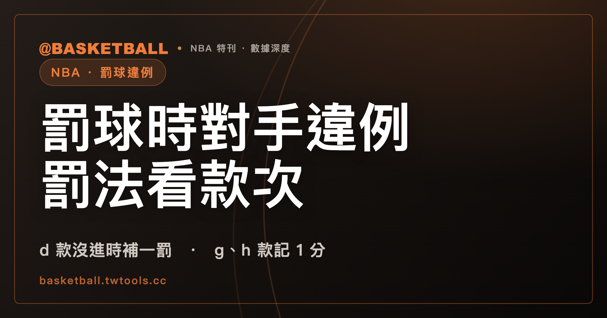

NBA 罰球時對手違例，罰法看款次：d 款在球仍在比賽中的罰球沒進時補一罰，g、h 款記 1 分
NBA 2025-26 規則書 Rule 9 §I 各款各寫罰則，找不到一句替罰球者的對手違例共用的罰則：d 款在球仍在比賽中的罰球、f 款在 disconcertion 時，寫罰球沒進就給 substitute free throw；g、h 款的碰球類違例寫記 1 分。讀完可以自己判一個標明假設的罰球違例情境。

新手村｜規則入門・罰球違例
罰球時，對手伸手碰球、踩進 lane、對罰球者喊話，各算什麼，怎麼罰？翻開 NBA 規則書，罰則不在同一處。Rule 9 §I 把罰球的規定一款一款列出來，每一款的罰則段各寫各的。
本文依據 NBA 2025-26 賽季官方規則書（Official Playing Rules）與 FIBA 2026 版規則書（2026 年 10 月 1 日生效），兩份都是 2026 年 10 月 4 日取得的全文文字檔。下文的條號都出自這兩份。
「罰球違例」是中文慣稱，規則書的寫法是 free throw violation（Rule 6 §I(e)(5)）。substitute free throw、disconcertion、remain in play 三個詞是規則書用語，站內沒有既定中譯，本文保留英文。「球仍在比賽中」「球不會繼續在比賽中」是本文對 remain in play 與 not to remain in play 的中文轉述。違例與犯規的預設差別，請看本站的違例與犯規有什麼不同；本文只看罰球這一塊。
罰球違例不只是別人干擾：罰球者踩過罰球線平面或做假動作，也是違例
NBA 2025-26 規則書 Rule 9 §I(a) 要求罰球者站在罰球線之上、罰球圈（free throw circle）的上半圈之內，並在控制球後 10 秒內出手，出手的要件是球進籃或觸圈。10 秒的時限，請看本站的5 秒的時限一文；那篇把 NBA 的 10 秒與 FIBA 2024 版的 5 秒並列寫過，本文不展開。
另外兩款也是限制罰球者自己。Rule 9 §I(b) 寫，罰球者在球觸到籃圈、籃板，或該次罰球結束之前，不得跨過罰球線的平面。「踩線」是中文慣稱，原文是 step over the plane。Rule 9 §I(c) 寫，罰球者不得故意對罰球做假動作。
b、c 兩款的罰則段都寫成「罰球者在所有罰球嘗試中的違例」，b 款另寫不得分。之後的發球或繼續比賽，依球是否會繼續在比賽中分兩段，見後文的罰則表。Rule 8 §III(d) 也寫了發球位置：罰球者或其隊友罰球違例之後，擲球入場在罰球線延伸處任一側的界外進行。c 款的罰則段另有一句：對手違反任何罰球規則時，不判 double violation。
lane space 的占位順序，d 款首句限定在一般犯規的罰球
Rule 9 §I(d) 管的是 lane 旁的站位。lane space 是規則書用語，指罰球時 lane 旁分給球員站的空位。首句寫的是「一般犯規（common foul）的罰球」，後面的順序都掛在這個情形下：
| 空位 | d 款對一般犯規罰球的寫法 |
|---|---|
| 最靠近底線的空位 | 每一個都要由罰球者的對手占 |
| 兩側緊接著的空位 | 由罰球者的隊友占 |
| 第三組空位（原文 the third spaces，複數） | 其中只有一個可以由對手占；不強制由對手占，但不得由隊友占 |
原文還寫了一句：if there is a discrepancy（沒有說明是什麼出入），罰球者的隊友先占空位。
接下來三句寫球員在出手時的限制，句子本身沒有重述「一般犯規」這個前提。占 lane space 的球員，在罰球者出手時不得越過自己的 lane space 擋到對手前面，也不得碰到 lane line 或線內地板。他們在球出手前，也不得離開自己的 lane space 超過 3 呎（距 lane line）。沒有占 lane space 的球員，要留在三分線後方、罰球線延伸線以上的場內，出手時同樣不得碰到線或線內地板。
「線」指什麼，Rule 1 §I(b) 寫了：lane 的所有邊界線屬於 lane，lane space marks 與 neutral zone marks 不屬於 lane。
最後一罰之後球會成死球時，e 款不許任何球員占 lane 旁的位置
Rule 9 §I(e) 處理另一種情形：最後一罰之後球會成為死球。這時球員不得占 free throw lane 旁的位置，所有球員要留在三分線後方、罰球線延伸線以上的場內，直到球出手。
e 款的罰則段把理由寫進句子裡：不論哪些球員違例，都不會形成違例，因為無利益可得（no advantage is gained）。例外是對手的 disconcertion，判給罰球者一次 substitute free throw。disconcertion 是什麼，下一節讀。
f 款列了四項 disconcertion，第 1 項限在球不會繼續在比賽中的罰球，第 2 到 4 項適用任何罰球嘗試
Rule 9 §I(f) 的規定是：所有罰球嘗試中，球交到罰球者手中之後，場上的對手不得 disconcert 罰球者。條文列了四項行為：
| 項 | 寫的行為 | 適用的罰球 |
|---|---|---|
| (1) | 站在 lane line 上舉起手臂 | 限球不會繼續在比賽中的罰球 |
| (2) | 在罰球者視野內揮臂或做突然的動作 | 任何罰球嘗試 |
| (3) | 對罰球者說話，或大聲說話造成干擾 | 任何罰球嘗試 |
| (4) | 進入 lane 並持續移動 | 任何罰球嘗試 |
f 款的罰則是：罰球進了，不處罰；罰球沒進，給 substitute free throw。本文簡稱「補罰」，非規則書用語。
disconcertion 在其他款次也出現。Rule 9 §I(a) 的罰則段兩次寫到：對手的違例是 disconcertion 時，判給一次 substitute free throw。d 款在球不會繼續在比賽中的那一段、e 款的罰則段，也各寫了同一個例外。這三款的例外句沒有寫罰球進或不進；f 款的罰則段寫了。
Rule 5 §VII(b)(3) 另有一處用到同一個詞：防守隊請求暫停，裁判在投籃動作中、球出手前誤發暫停信號，如果之後的罰球沒進，裁判判 disconcerting 並給 substitute free throw。
罰球出手前裁判暫停比賽，所有罰球嘗試都不會有違例
Rule 9 §I(i) 寫了一句：所有罰球嘗試中，如果裁判在球出手前暫停比賽，不會有違例（no violations can occur）。i 款沒有自己的罰則段。
a、b、c、d、g、h 款的罰則，依球是否會繼續在比賽中分兩段
Rule 9 §I 的 a、b、c、d、g、h 六款，罰則段各分「球仍在比賽中」與「球不會繼續在比賽中」兩段。e、f 兩款的罰則段沒有這樣分。
remain in play 指哪些罰球？規則書的 Rule 4（定義章）沒有這個詞。Rule 6 §III(a)(3) 寫，球在罰球者出手時變活，限「球仍在比賽中」的罰球。Rule 6 §IV(a)(2) 在死球的情形裡，用括號舉了球不會繼續在比賽中的罰球：後面還有另一次罰球的罰球、技術犯規罰球、惡意犯規罰球等。
照這兩處的寫法，本文的讀法是：球仍在比賽中的罰球，大致是一組罰球的最後一罰，而且球會繼續留在比賽中。這是讀法，規則書沒有這樣下定義。下文提到「最後一罰，球仍在比賽中」，都依這個讀法。
a、b、c 三款寫的是罰球者一方的違例，兩段的寫法如下表；d、g、h 三款再依違例者是隊友或對手分句，留到後面兩節。
| 款 | 球仍在比賽中 | 球不會繼續在比賽中 |
|---|---|---|
| a | 對方在罰球線延伸處的任一邊線發球；雙方球隊都違例，在 midcourt 於場上任兩名對手間跳球 | 比賽從該點繼續 |
| b | 同 a 款：對方邊線發球；雙方都違例，midcourt 跳球 | 比賽從該點繼續；對手也違例（double violation），比賽也從該點繼續 |
| c | 對方在罰球線延伸處的任一邊線發球 | 比賽從該點繼續 |
表裡的 midcourt 跳球，請看本站的跳球與交替擁有一文；那篇已經把 Rule 9 §I(a) 的 midcourt 與 Rule 6 §V(a)(3) 的中圈並列讀過。
球仍在比賽中的罰球遇上對手違例，d 款寫罰球沒進時罰球者得 substitute free throw
d 款球仍在比賽中的那一段，先寫罰球者的隊友違例：不得分，對方在罰球線延伸處的任一邊線發球。接著寫對手違例：罰球沒進時，罰球者得一次 substitute free throw；罰球進了，原文寫 shall be ignored，句子沒有寫主詞。隊友與對手都違例時，在 midcourt 於場上任兩名對手間跳球。
d 款球不會繼續在比賽中的那一段，寫法不同：不論哪些球員違例，都不形成違例，只有對手的 disconcertion 例外，判 substitute free throw，句子沒有罰球進或不進的條件。
substitute free throw 寫在罰球沒進之後的，是 d 款球仍在比賽中那一段與 f 款；兩款各自另寫罰球進了的處理（d 款是 shall be ignored，f 款是 No penalty is assessed）。
g、h 款的碰球類違例，對手違例時四段罰則都寫記 1 分
g、h 兩款管的是碰球。「碰球類」是本文的概括，g 款也包括碰籃圈：
| 款 | 球員不得做的事 | 球仍在比賽中，對手違例 | 球不會繼續在比賽中，對手違例 |
|---|---|---|---|
| g | 球以籃圈為下緣時碰球或碰籃圈；球碰到籃圈或籃板後，仍在籃圈上方假想圓柱體內時碰球 | 記 1 分，比賽依罰球進球後的一般方式繼續，由裁判執行擲球入場 | 記 1 分，罰球者罰下一次罰球 |
| h | 球碰到籃圈或籃板之前碰球 | 記 1 分，並給同一位罰球者再一次罰球 | 記 1 分，罰球者罰下一次罰球 |
兩款四段的對手違例句都寫 one point shall be scored，後續處理各款各段不同。罰球者的隊友在 h 款球仍在比賽中違例時，寫的是不得分，對方在罰球線延伸處任一邊線發球，與 d 款同一個句型。
Rule 9 §I 九款對手違例的處理句各寫各的，找不到一句各款共用
對手違例的處理句有這幾種寫法：
- 給 substitute free throw：d 款球仍在比賽中的罰球（沒進時）、f 款的 disconcertion（沒進時），以及 a、d、e 三款罰則段對手 disconcertion 的例外句。
- 記 1 分：g、h 款。
- 不判 double violation：c 款。
- 雙方都違例：a、b 款球仍在比賽中的罰球跳球，d 款隊友與對手都違例也跳球；a、b 款球不會繼續在比賽中的罰球，比賽從該點繼續。
- i 款沒有罰則段，只寫裁判暫停時不會有違例。
有人可以把 a 款罰則段的首句「有違例且球仍在比賽中，對方在罰球線延伸處發球」讀成各款共用的總則。本文的讀法不同：那句排在 a 款之下，b、c、d、g、h 各款又各自重寫同型的句子，所以讀成各款各寫。
FIBA 2026 版把罰球違例寫在 Art. 44，碰球類違例寫在 Art. 31
FIBA 2026 版的罰球條文是 Article 44。Art. 44.2 先寫誰該站哪裡。罰球者要在罰球線後方、semi-circle 之內取位，在球進籃或觸圈之前，不得碰罰球線或進入 restricted area，也不得做罰球假動作（44.2.3）。在 free-throw rebound places 的球員有權輪流占這些深度 1 公尺的位置（44.2.4），球離開罰球者的手之前，不得進入 restricted area、neutral zone 或離開自己的 place。不在這些位置的球員，到罰球結束前要留在罰球線延伸線與 3-point goal line 後方（44.2.5）。罰球之後還有其他罰球或擲球入場時，所有球員也留在這兩條線後方（44.2.6）。44.2.6 末句寫，違反 44.2.3 到 44.2.6 即是違例。free-throw rebound places 與 neutral zone 沒有既定中譯，本文保留英文。
罰則依罰球成功與否、違例者身分分條：
| 情形（FIBA 2026 版） | 結果 | 條號 |
|---|---|---|
| 罰球成功，違例者是罰球者 | 該分不算 | 44.3.1 |
| 罰球成功，違例者是罰球者以外的任何球員 | 違例被忽略（disregarded） | 44.3.2 |
| 罰球不成功，違例者是 "A free-throw shooter or the team-mate on the last free throw"（原文介詞片語，本文不拆讀） | 球判給對手，在罰球線延伸處擲球入場，除非該隊還有後續球權 | 44.3.3 |
| 罰球不成功，違例者是罰球者的對手 | 罰球者得 substitute free throw | 44.3.3 |
| 罰球不成功，雙方在最後一罰都違例 | 形成 jump ball situation | 44.3.3 |
| 防守球員在罰球的球飛向籃框途中、碰籃圈之前碰球（goaltending，Art. 31.2.2），球是為罰球出手 | 判進攻隊 1 分 | 31.3.2 |
| 防守球員在最後一罰期間違例（Art. 31） | 1 分之後，另加 category 2 technical foul penalty，由該防守球員承擔 | 31.3.3 |
FIBA 2026 版 Art. 44 全文沒有 disconcertion 這個詞。Art. 44.2.4 有一句 "Distract the free-throw shooter by their actions."，禁止 free-throw rebound places 的球員以動作 distract 罰球者。NBA 的 disconcertion 與 FIBA 的 distract 各自出現在各自的規則書裡，本文不把兩個詞互譯。
罰球違例的假設情境，要先問哪一款、球會不會繼續在比賽中
下面六個情境都是假設，不涉及任何真實球員或比賽。每題標明聯盟與版本。先想答案，再看判法。
情境一（NBA 2025-26）。 甲隊罰球者因一次一般犯規罰兩球，裁判把球交給罰球者之後、第 1 罰出手前，乙隊球員站在 lane 旁，大聲對罰球者說話。第 1 罰沒進。
判法：第 1 罰後面還有第 2 罰，屬 Rule 6 §IV(a)(2) 括號寫的「後面還有另一次罰球的罰球」，球不會繼續在比賽中。說話屬 Rule 9 §I(f)(3)。f 款罰則：罰球沒進，給 substitute free throw；d 款球不會繼續在比賽中那一段，也把對手的 disconcertion 判為 substitute free throw。結果：甲隊罰球者得一次 substitute free throw。
情境二（NBA 2025-26）。 甲隊罰球者罰一般犯規的第 2 罰，這是最後一罰，球仍在比賽中。乙隊占其中一個 third space 的球員，在球出手時腳踩 lane line。罰球沒進。
判法：這是 Rule 9 §I(d) 的一般犯規罰球，占 lane space 的球員出手時不得碰 lane line。乙隊球員是罰球者的對手，球仍在比賽中，罰球沒進，罰球者得一次 substitute free throw。如果同一罰球進了，原文寫 shall be ignored。如果踩線的是甲隊占 lane space 的隊友，d 款寫的是不得分，對方在罰球線延伸處任一邊線發球。
情境三（NBA 2025-26）。 甲隊罰球者罰最後一罰，球仍在比賽中。球飛向籃圈，還沒碰到籃圈或籃板，乙隊球員伸手碰到球。
判法：Rule 9 §I(h) 寫，球碰到籃圈或籃板之前，任何球員不得碰球。對手違例，球仍在比賽中，記 1 分，並給同一位罰球者再一次罰球。如果這是兩罰的第 1 罰，球不會繼續在比賽中，h 款寫的是記 1 分，罰球者罰下一次罰球。
情境四（NBA 2025-26）。 甲隊罰球者罰最後一罰，球仍在比賽中。球還沒碰到籃圈或籃板，罰球者的腳已經跨過罰球線的平面。
判法：Rule 9 §I(b) 寫罰球者不得跨過罰球線平面，罰則段寫這是罰球者的違例，不得分。球仍在比賽中，對方在罰球線延伸處任一邊線發球。如果這是兩罰的第 1 罰，球不會繼續在比賽中，比賽從該點繼續。
情境五（FIBA 2026）。 甲隊罰球不成功。乙隊在 free-throw rebound place 的球員，在球離開罰球者的手之前，離開了自己的 place。
判法：Art. 44.2.4 禁止這個動作，44.2.6 末句把違反視為違例。違例者是罰球者的對手，罰球不成功，依 44.3.3，罰球者得 substitute free throw。如果同一罰球成功，違例者是罰球者以外的球員，依 44.3.2，違例被忽略。
情境六（FIBA 2026）。 乙隊防守球員在甲隊罰球的球飛向籃框途中、碰籃圈之前，碰到球。
判法：這符合 Art. 31.2.2 寫的罰球 goaltending。依 Art. 31.3.2，球是為罰球出手，判甲隊 1 分。如果這是最後一罰，依 Art. 31.3.3，1 分之後另加 category 2 technical foul penalty，由該防守球員承擔。
範圍與版本
本文只讀 NBA 2025-26 規則書 Rule 9 §I 與 FIBA 2026 版 Art. 44、Art. 31 的相關條文。技術犯規與惡意犯規後的罰球、罰球順序與執行人，不在本文範圍。
本文有兩處是讀法，不是規則書的定義：「球仍在比賽中的罰球大致是一組罰球的最後一罰」，以及「Rule 9 §I 各款各寫罰則」。兩處都建立在這一版的條文寫法上。規則書會隨賽季修訂，新版若為 remain in play 下定義或寫進各款共用的罰則，請以官方最新版為準。
常見問題
NBA 罰球時對手違例，都是給 substitute free throw 嗎？
不是。依 NBA 2025-26 規則書 Rule 9 §I，要看款次：d 款在球仍在比賽中的罰球、f 款在 disconcertion 時，罰球沒進給 substitute free throw；g、h 款的碰球類違例，對手違例時記 1 分。對照見正文 d 款與 g、h 款兩節。
FIBA 2026 版有 disconcertion 嗎？
FIBA 2026 版 Art. 44 全文沒有 disconcertion 這個詞，Art. 44.2.4 有 "Distract the free-throw shooter by their actions."，針對 free-throw rebound places 的球員。本文不把兩個詞互譯。
罰球者自己踩線或做假動作，怎麼處理？
依 NBA 2025-26 規則書 Rule 9 §I(b)、(c)，兩者都是罰球者在所有罰球嘗試中的違例，b 款（踩過罰球線平面）另寫不得分；球仍在比賽中的罰球，對方在罰球線延伸處的任一邊線發球。FIBA 2026 版 Art. 44.3.1 寫，罰球成功且違例者是罰球者時，該分不算。
罰球時防守方碰球，NBA 與 FIBA 2026 各怎麼寫？
NBA 2025-26 規則書 Rule 9 §I(g)、(h)：對手違例時記 1 分，球仍在比賽中的 h 款另給同一罰球者再一次罰球。FIBA 2026 版寫在 Art. 31：防守球員違例且球是為罰球出手，判進攻隊 1 分；最後一罰另加 category 2 technical foul penalty（Art. 31.3.2、31.3.3）。
資料來源
- NBA Official Playing Rules 2025-26 賽季規則書：Rule 1 §I(b)、Rule 5 §VII(b)(3)、Rule 6 §III(a)(3)、§IV(a)(2)、§V(a)(3)、§I(e)(5)、Rule 8 §III(d)、Rule 9 §I(a) 至 (i)。本機保存的全文文字檔，取得日 2026 年 10 月 4 日，無可點擊網址。
- FIBA Official Basketball Rules 2026 版（2026 年 10 月 1 日生效）：Article 31.2.2、31.3.2、31.3.3，Article 44.2.3 至 44.2.6、44.3.1 至 44.3.3。本機保存的全文文字檔，取得日 2026 年 10 月 4 日，無可點擊網址。